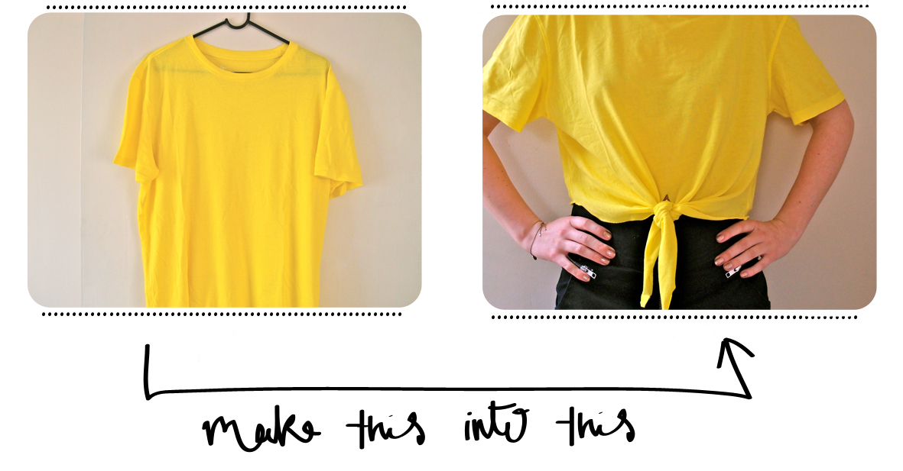

How To Crop A T-Shirt
Everyone has that one shirt that they Love but it's just too big! Don't worry it's easier than you think!
- Put on the desired t-shirt and mark how short you want it to be with pencil/chalk.
- Lay the t-shirt on a flat surface. Take a ruler and measure a straight line all the way across the shirt.
-
- First: cut down the side of the shirt along the seams.
Second: flip the shirt with the back side up, and only cut the back along the line you drew. - Fold the front side into a triangle with the seams lines up.
- Cut between the seems so that it cuts the front in half.
- Now tie the front into a cute bow or knot and you have a croptop!